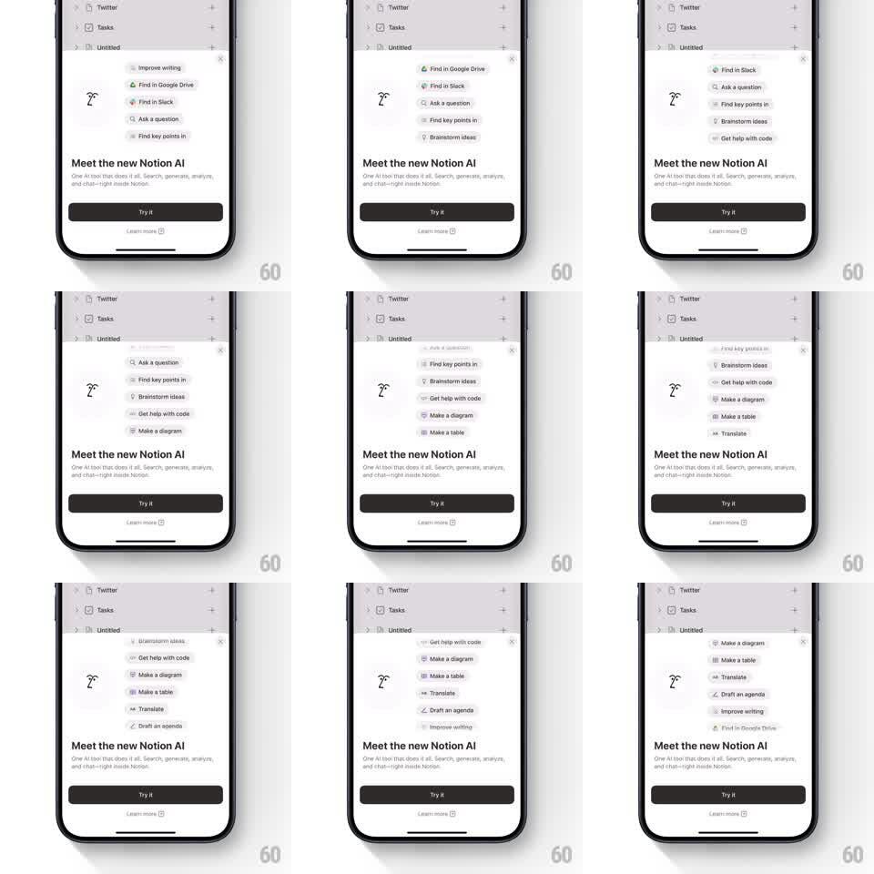

Media
Frame-by-frame

Rebuild this transition 1:1: Notion AI's intro sheet - a vertical ticker of AI action pills auto-scrolls above a "Meet the new Notion AI" bottom sheet, streaming capabilities upward in an endless loop.

Rebuild this transition 1:1: Notion AI's intro sheet - a vertical ticker of AI action pills auto-scrolls above a "Meet the new Notion AI" bottom sheet, streaming capabilities upward in an endless loop.
## Integration
Integration: stack-agnostic spec - springs given as stiffness/damping, timed motions as duration + curve; map every value to your framework and animation library of choice.
## Scene
A Notion page behind (sidebar: Twitter, Tasks, Untitled) dimmed under a scrim. A bottom sheet: the Notion AI wand logo, an auto-scrolling column of action pills ("Improve writing", "Find in Google Drive", "Find in Slack", "Ask a question", "Find key points in", "Brainstorm ideas", "Get help with code", "Make a diagram", "Make a table", "Translate", "Draft an agenda"...), then the title "Meet the new Notion AI", the subtitle "One AI tool that does it all. Search, generate, analyze, and chat-right inside Notion.", a black "Try it" button, and a "Learn more" link.
## Motion spec
Pattern: auto-scrolling vertical ticker of capability pills.
- The sheet rises on entry (spring ~300/24, from 90% height), scrim fading to 40% (300ms).
- The pill column scrolls upward continuously at 28pt/s in a seamless loop (content duplicated for wraparound), each pill a small rounded chip with an icon and label.
- Pills fade to 0 over the top and bottom 24pt of the ticker window (gradient mask).
- Every ~2.2s the ticker eases to a subtle pause on a pill (120ms ease-out, holds 400ms, eases back to speed over 300ms) so individual actions are readable.
- The wand logo idles with a tiny sparkle (scale 1 -> 1.06 -> 1, 2.8s loop).
- Try it presses with a 0.96 scale; tapping it dismisses the sheet down (spring ~320/26) and fades the ticker first (150ms).
## Calibration
- The loop must be seamless: identical spacing at the wrap point, no jump.
- Ticker speed is constant enough to read: 28pt/s, never accelerating past 40pt/s after a pause.
## Reduced motion
Ticker is static, showing 4 stacked pills; a slow crossfade swaps the set every 3s.
## Don't miss
- Pills are real Notion AI actions with their icons - keep the copy verbatim.
- The ticker sits between the logo and the title, visually feeding the "does it all" claim.